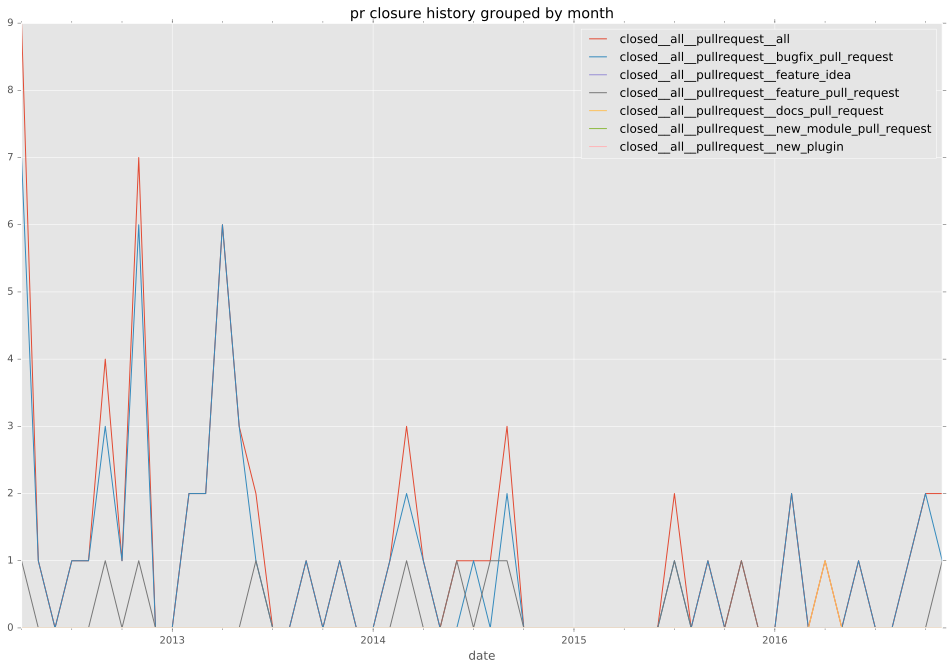

total issue counts
feature pull request: 10
documentation pull request: 1
pullrequest: 63
docs pull request: 1
bugfix pull request: 51
feature idea: 3
issue: 7
bug report: 4
issue history
pullrequest history

days open by issue type
bugfix pull request
count: 67
std: 41.4557302036
min: 0
max: 337
median: 0.0
mean: 7.40298507463
all
count: 88
std: 59.3826785169
min: 0
max: 366
median: 0.0
mean: 17.7954545455
documentation pull request
count: 2
std: 0.0
min: 0
max: 0
median: 0.0
mean: 0.0
pullrequest
count: 0
std: nan
min: nan
max: nan
median: nan
mean: nan
docs pull request
count: 2
std: 0.0
min: 0
max: 0
median: 0.0
mean: 0.0
feature pull request
count: 11
std: 41.9018333294
min: 0
max: 104
median: 0.0
mean: 26.8181818182
feature idea
count: 2
std: 22.627416998
min: 0
max: 32
median: 16.0
mean: 16.0
issue
count: 0
std: nan
min: nan
max: nan
median: nan
mean: nan
bug report
count: 4
std: 132.982141658
min: 48
max: 366
median: 164.5
mean: 185.75
closures grouped by total days open